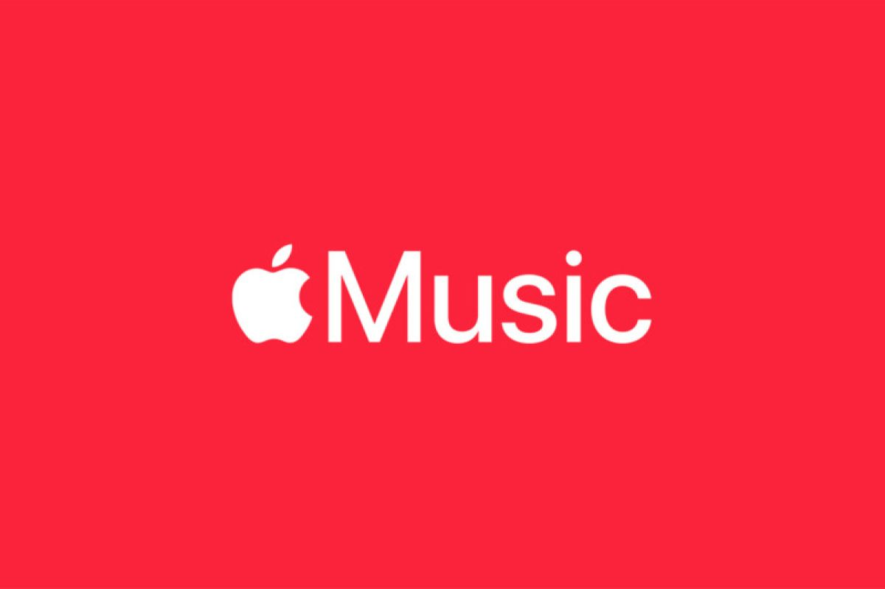
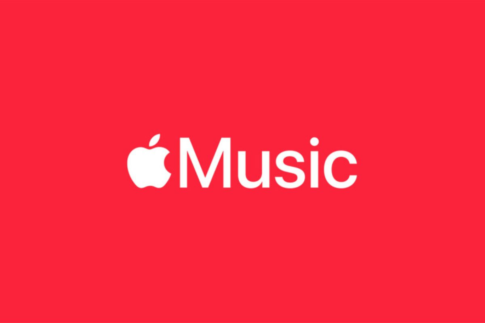

💾 Apa Itu Software?
Software adalah program/aplikasi yang dijalankan di komputer. Contohnya: Microsoft Word, Chrome, Photoshop, dan Windows.
Software terbagi menjadi beberapa jenis berdasarkan fungsi dan penggunaannya:
1. Sistem Operasi
Sistem operasi adalah software utama yang mengatur semua sumber daya komputer dan menjadi dasar untuk menjalankan aplikasi lainnya.
- Contoh: Windows, MacOS, Android, iOS


2. Aplikasi Pengolah Data, Gambar, Video, dan Grafis
Aplikasi jenis ini membantu pengguna dalam membuat dokumen, desain, video, dan grafis.
- Contoh: Microsoft Office, Adobe Photoshop, Blender, CorelDRAW, Capcut


3. Aplikasi Pengolah Suara dan Musik
Software ini digunakan untuk memutar, merekam, atau mengedit suara dan musik.
- Contoh: Media Player, AutoCAD, Spotify, Apple Music
 

Contoh software tergolong banyak dan beragam tergantung pada kegunaannya di bidang masing-masing.